Vor der Shinjuku Station empfingen mich Neonlicht, J-Pop und eine Wand aus Menschen. Niemand rempelte mich an. Knapp 14 Millionen Menschen, und alle kannten die Schritte. Ich stand da mit dem Gepäck wie jemand, der zur falschen Probe erschienen ist.
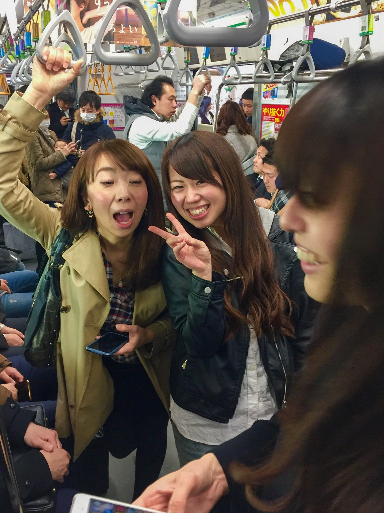
Akihabara und Meiji-jingū
In Akihabara blinkt alles gleichzeitig, zwischen Anime-Cafés und Anime-Türmen hängen Lautsprecher.
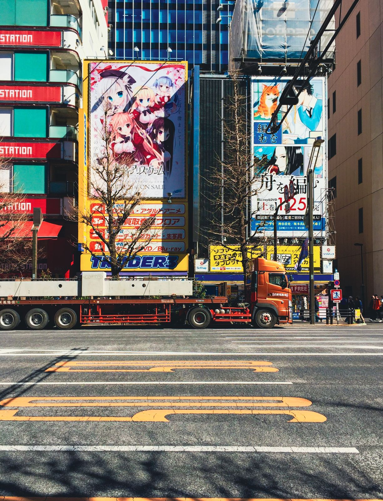
Eine Bahnfahrt weiter verschluckt der Meiji-jingū den Lärm. Zypressenduft statt J-Pop. Ein Hochzeitspaar kam mir entgegen. Sie in weißer Seide mit Wataboshi-Haube, er im schwarzen Montsuki. Hochzeitsgäste und Touristen, hundert Handys. Trotzdem war es still. Ich habe ein Foto gemacht und dann nur noch zugeschaut.
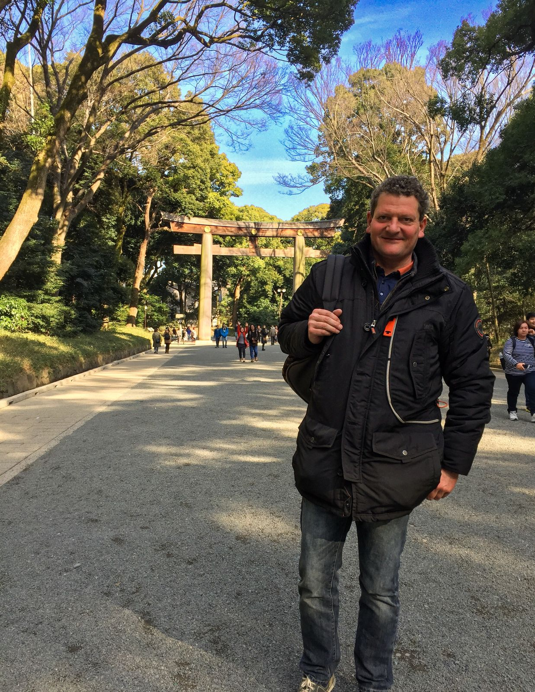

Direkt neben dem Schrein liegt der Yoyogi-Park. Früher Exerzierplatz der kaiserlichen Armee, später amerikanische Wohnsiedlung, dann 1964 Olympisches Dorf. Seit 1967 ist er einfach nur Park, 54 Hektar groß. Zur Kirschblüte kommen Tausende. Sonntags spielen hier Musiker, ein paar Meter weiter posieren Cosplayer, dahinter trainiert eine Kampfsportgruppe. Alle im selben Park. Ich habe hier oft stundenlang gesessen, besonders gern im Frühling.
Tipp: Den Meiji-jingū möglichst früh am Morgen besuchen. Später wird es voll, und die Stille bricht.
Asakusa und der Kaiserpalast
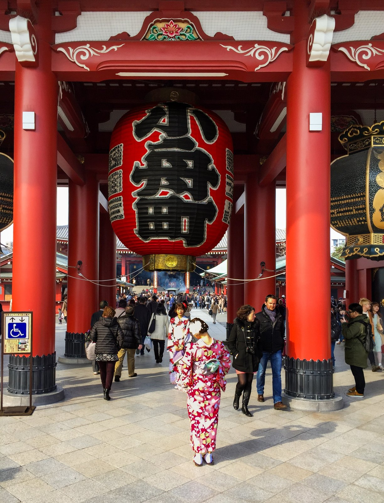
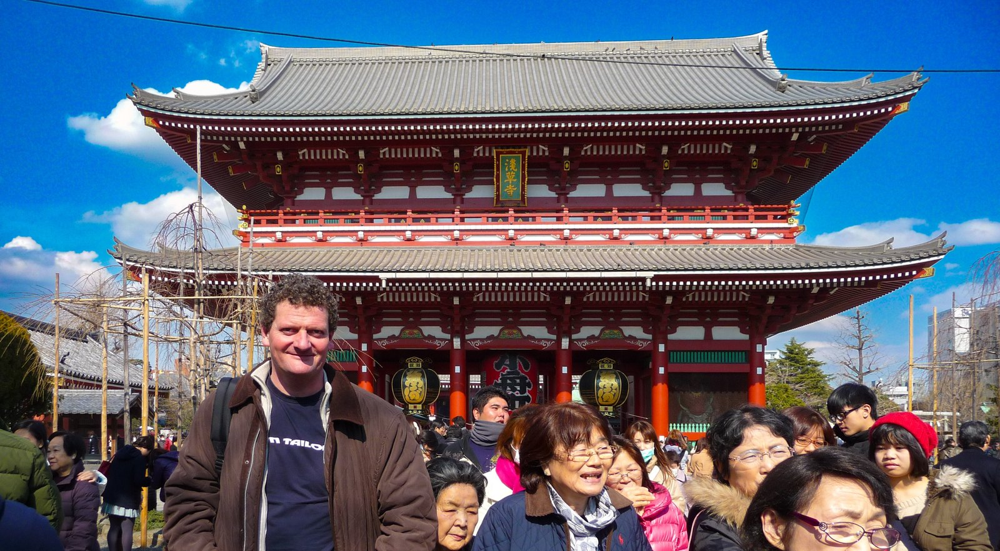
Im Hōzōmon des Sensō-ji hängt eine rote Papierlaterne. Knapp vier Meter hoch. Frauen im Kimono laufen zwischen Selfie-Stöcken hindurch, als wäre das schon immer so gewesen. Die Handys sind neu. Der Tempel nicht. Gegründet 628, Tokios ältester buddhistischer Tempel.
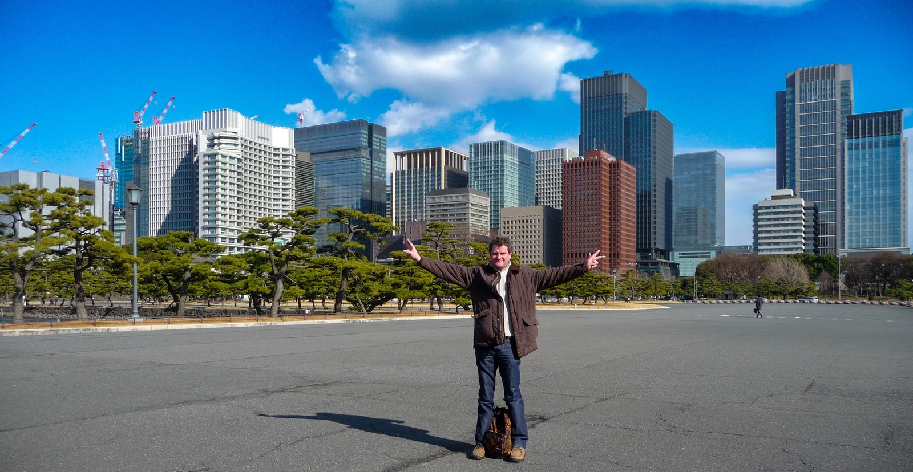
Ein paar Kilometer weiter vor dem Kaiserpalast: Kōkyo Gaien. Der Palast steht dort, wo seit 1457 die Burg Edo stand. 1868 zogen Kaiser und Hauptstadt von Kyōto hierher, und aus Edo wurde Tokio. Asphalt und Kies wechseln sich hier ab. Dazwischen wachsen gestutzte Schwarzkiefern, dahinter leuchten die Glastürme von Marunouchi. Für den eigentlichen Palastbesuch samt Palastgarten brauchte ich 2009 eine schriftliche Erlaubnis, beantragt von Deutschland aus. Heute meldet man sich online an, oder am selben Tag direkt am Kikyōmon-Tor. Danach noch ein Erinnerungsfoto, ziemlich allein auf dem Platz.
Tipp: Der Platz vor dem Palast lohnt sich auch ohne Einlass.
Tokyo Tower und Skytree
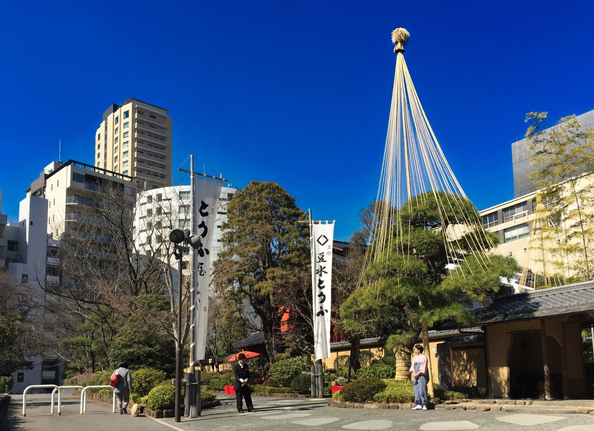
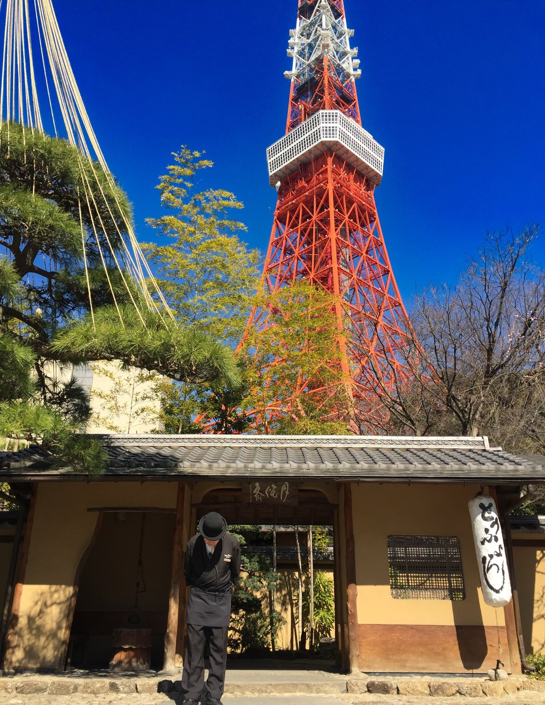
Zu Füßen des Tokyo Tower verbeugt sich der Uketsuke, der Gastgeber am Eingang des Tofuya Ukai. Tief und lange. Ojigi, ohne ein Wort. Daneben steht ein Kiefernbaum, mit Seilen kegelförmig nach oben gebunden. Yukizuri heißt diese Technik, eigentlich gedacht gegen Schneelast, hier mitten im Frühling einfach stehen geblieben. Darüber 333 Meter orange-weißer Stahl. Ich habe beides fotografiert und mich gefragt, wer hier eigentlich wen in den Schatten stellt. Die Bedeutung der Verbeugungen erkläre ich dir in Verbeugen in Japan.
2012 kam der Tokyo Skytree dazu. 634 Meter. Die Wolkenkratzer rund um den alten Turm hatten das Fernsehsignal blockiert. Also baute man einfach höher. Ich war kurz nach der Eröffnung oben. Seitdem bin ich mehrmals zurückgekehrt. Manche Türme hakt man ab. Diesen eben nicht.
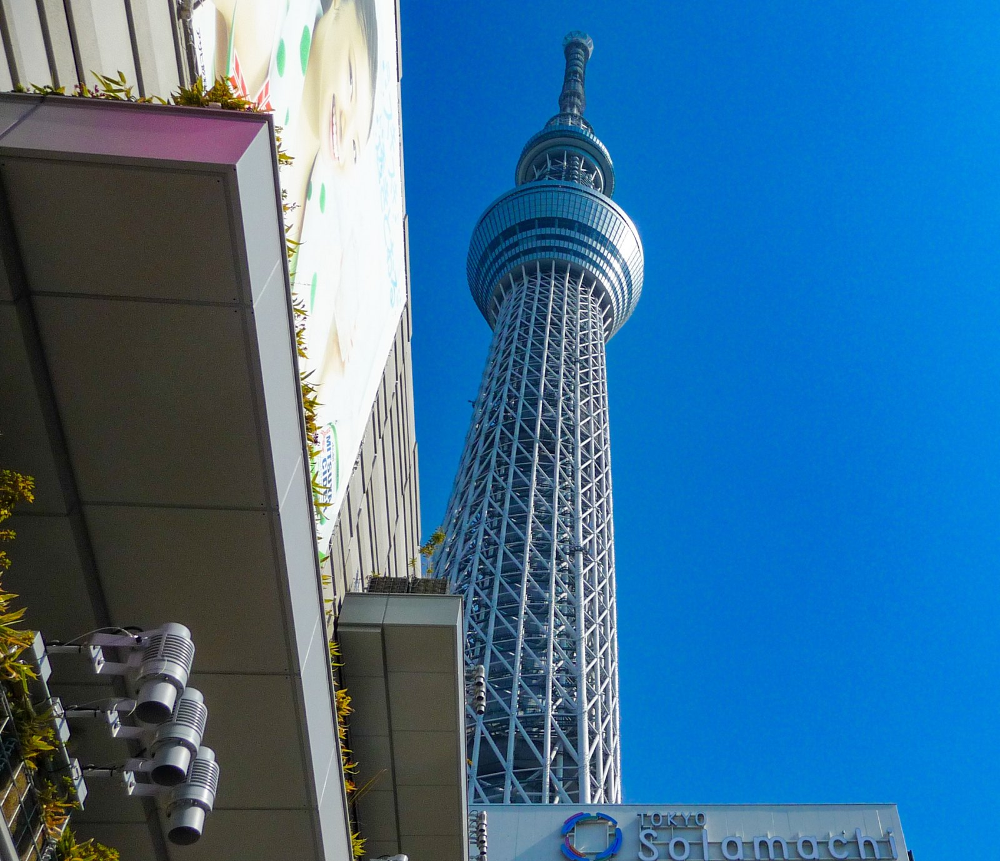
Tipp: Den Tokyo Tower von unten anschauen, den Skytree von oben, wegen der besseren Aussicht. An klaren Tagen kann man den Mount Fuji sehen.
Essen und Automaten
Am Automaten zieht man für 500 Yen ein Ramen-Ticket. Was dann auf den Tisch kommt, hätte ich für das Geld nicht erwartet.
An jeder Ecke stehen Getränkeautomaten. Nachts leuchten sie in Gassen, in denen sonst nichts geöffnet hat. Japan hat eine der höchsten Automatendichten der Welt, etwa einen auf 30 bis 40 Menschen.
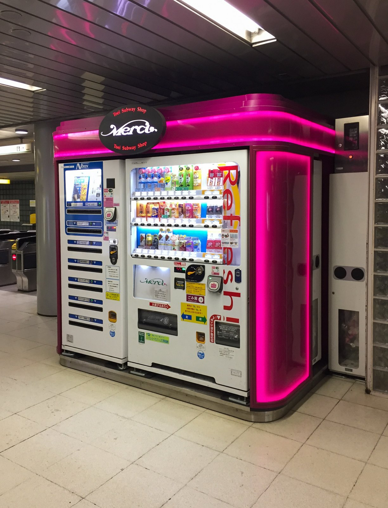
Was hängen bleibt
Das Verbeugen des Schaffners mit den weißen Handschuhen. Die Taxis mit den weißen Spitzendeckchen auf den Sitzen. Die Tatsache, dass man nachts um drei durch jede Gasse gehen kann, ohne sich umschauen zu müssen. Ich habe das getestet. Die Stadt ist sicher. Getoppt hat das für mich nur Singapur.
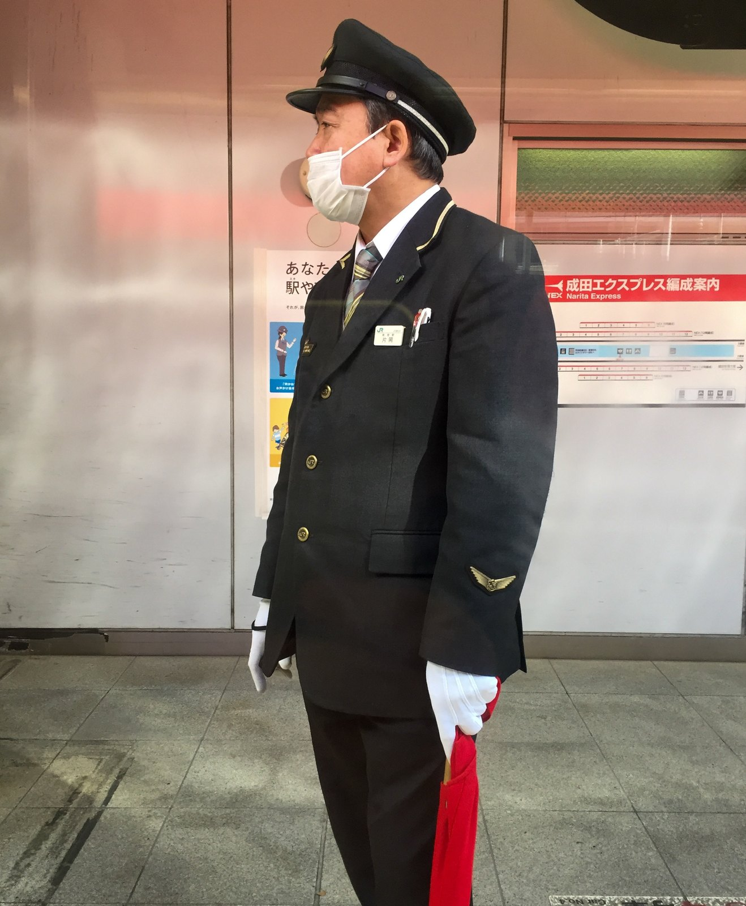


Vor einem großen Werbebanner in Akihabara stand ein Mann und schaute versunken auf das Anime. Ich habe direkt neben ihm fotografiert, bemerkt hat er mich nicht.
In Shibuya steht Tower Records. „No Music No Life“: ein Teil meiner Lebenseinstellung, lange bevor ich wusste, dass es auch der Slogan des Ladens ist. Ich war im Café oben und habe Leute beobachtet. Einige sahen aus, als würden sie hier wohnen. Die Filiale gibt es heute noch, an dieser Stelle seit 1995. Im Winter 2025/26 wurde sie über mehrere Etagen umgebaut.
Steig an irgendeiner Station aus, deren Namen du nicht aussprechen kannst, den Rest erledigt die Stadt.
Welche Stationen sich dafür besonders lohnen, steht in Tokio zu Fuß: 8 Bahnhöfe, an denen Sightseeing direkt beginnt.
Quellen & Recherche
Diese Story basiert nicht nur auf eigenen Erinnerungen. Ein paar Fakten habe ich recherchiert und mit folgenden Quellen abgeglichen. Wer will, kann selbst nachlesen.
- Geschichte des Sensō-ji, offizielle Tempelseite
- Tokyo Tower, Wikipedia
- Tokyo Skytree, Wikipedia
- Yoyogi Park, Wikipedia
- Washington Heights Tokyo, Wikipedia
- Mt.-Fuji-Sicht vom Tokyo Skytree, offizieller Tokio-Reiseführer GoTokyo
- Umbau Tower Records Shibuya 2025/26, PR Newswire
- Hōzōmon und Laterne, Wikipedia
- Gründung des Sensō-ji 628, offizieller Tokio-Reiseführer GoTokyo
- Olympische Spiele Tokio 1964, Olympics.com
- Einwohnerzahl Tokio 2017, Tokyo Metropolitan Government
- Getränkeautomaten in Japan, japan-guide.com
- Führung Kaiserpalast, Kaiserliches Hofamt (Kunaichō)
- Kaiserpalast auf dem Gelände der Burg Edo, japan-guide.com
- 江戸城 (Burg Edo, 1457), Wikipedia Japan
- Edo-jō, Wikipedia
- Edo Castle, Wikipedia
- Standort Titelbild: nahe Bahnhof Akihabara, Wikipedia